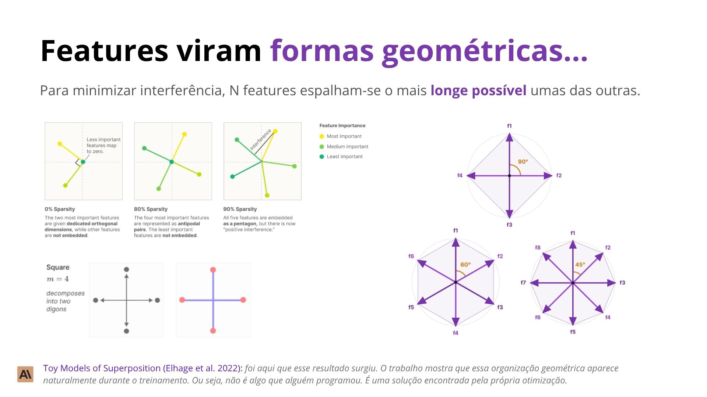
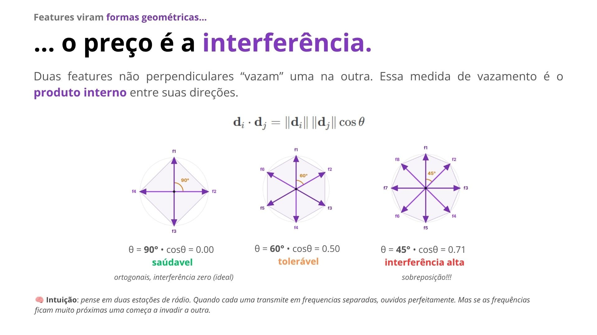
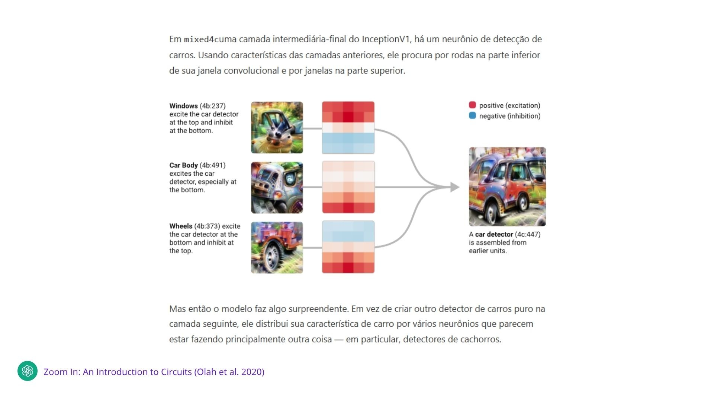
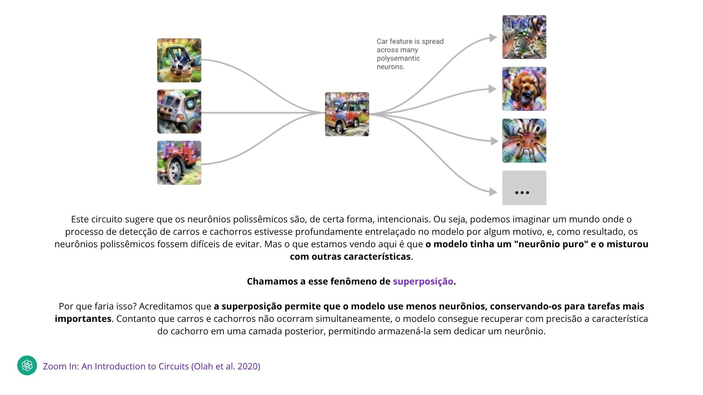

PPGCC · PUCRS
…
Cada camada produz um vetor de números: a ativação.
Esse vetor representa o atual do processamento e é chamado de Residual Stream.
Attention e MLP adicionam novas informações a esse vetor.
O Residual Stream atualizado é então passado para a próxima camada.
💡 Mechanistic Interpretability: entender o que as ativações representam e como um resultado é computado a partir delas.
O modelo não manipula palavras, fatos ou ideias diretamente. Internamente, tudo é representado como vetores de números.
A hipótese da interpretabilidade é que esses números codificam conceitos (features) compreensíveis, como gênero, idioma, entidades, sintaxe ou relações semânticas.
Surge então a pergunta: onde esses conceitos estão representados dentro do vetor?
A primeira descoberta: o significado está na direção.
O espaço de ativação tem d dimensões (neurônio), mas um conceito (feature) raramente mora num neurônio só - ele é uma direção que combina vários.
Uma feature é uma direção que combina vários neurônios.
E se conceitos são vetores, combiná-los vira soma e subtração. Partindo de rei, subtraio a direção homem, somo mulher, e chego perto de rainha.


Agora entendemos por que a ideia de "um neurônio, um conceito" não funciona.
Como várias features compartilham os mesmos neurônios, cada neurônio responde a diversas coisas diferentes.
Esse é o fenômeno de sobreposição (superposition).
NEURÔNIO #328
uma única unidade, isolada na rede
dispara forte para… ↓
gatos · direito · biologia?
nenhum rótulo único explica esse neurônio


Agora entendemos por que a ideia de "um neurônio, um conceito" não funciona.
Como várias features compartilham os mesmos neurônios, cada neurônio responde a diversas coisas diferentes.
Esse é o fenômeno de sobreposição (superposition).
🎯 DESAFIO
Os neurônios estão misturando diversas features ao mesmo tempo.
Nós queremos separar essas features → tornar os neurônios polissemânticos em monosemânticos.
NEURÔNIO #328
uma única unidade, isolada na rede
dispara forte para… ↓
gatos · direito · biologia?
nenhum rótulo único explica esse neurônio
Da teoria à prática
Até aqui vimos os conceitos: o Residual Stream carrega a informação, essa informação vive em features (direções), e essas features vivem em sobreposição dentro dos neurônios.
Mas conceito sozinho não abre o modelo. Precisamos de técnicas — métodos concretos pra ler, testar e controlar o que está acontecendo lá dentro.
A partir daqui, cada bloco apresenta uma técnica: o que ela faz, como funciona passo a passo, e um exemplo real.
Conceitos
Residual Stream · Features · Sobreposição
Técnicas
Leitura · Intervenção · Automação · Controle
Duas perguntas fundamentalmente diferentes
As técnicas a seguir se dividem em duas famílias — a diferença está em o que cada uma realmente prova:
🔍 Leitura (correlação)
"Essa informação está representada aqui?"
Você observa as ativações sem mexer em nada. Acha onde um conceito mora — mas não prova que o modelo realmente usa aquilo pra decidir o que fazer.
⚡ Causal
"Essa ativação causa o comportamento?"
Você intervém — corrompe, corta, soma um vetor — e mede o que muda na saída. Só a intervenção prova necessidade e suficiência.
🎯 POR QUE AS DUAS IMPORTAM
Leitura é rápida e barata — acha candidatos pra investigar. Causal é mais cara, mas é a única forma de provar que aquele candidato realmente importa. Na prática: leitura aponta onde olhar, causal confirma o que importa.
O que o modelo já "pensa" nesta camada?
O Residual Stream é atualizado a cada camada, mas só vemos a saída final - e não onde o modelo se decide. "Será que, antes da última camada, o modelo já consegue prever o próximo token?" 🤔
💡 IDEIA — observar quais tokens o modelo escolheria se precisasse responder naquele exato momento.
🎯 NA PRÁTICA
Projetamos a ativação de uma camada pela saída do modelo (LayerNorm + unembedding) e vemos a "previsão em formação" — aqui, com GPT-Neo-2.7B tentando prever a palavra "Transformer" no abstract de Vaswani et al. (2017).
Previsão na camada 6 (de 32)
❓ distribuição quase uniforme — nada relacionado a "Trans" ainda
(probabilidades ilustrativas — o paper mostra o padrão qualitativo por camada, não publica os valores exatos)
O que o modelo já "pensa" nesta camada?
O Residual Stream é atualizado a cada camada, mas só vemos a saída final - e não onde o modelo se decide. "Será que, antes da última camada, o modelo já consegue prever o próximo token?" 🤔
💡 IDEIA — observar quais tokens o modelo escolheria se precisasse responder naquele exato momento.
🎯 NA PRÁTICA
Projetamos a ativação de uma camada pela saída do modelo (LayerNorm + unembedding) e vemos a "previsão em formação" — aqui, com GPT-Neo-2.7B tentando prever a palavra "Transformer" no abstract de Vaswani et al. (2017).
Previsão na camada 15 (de 32)
❓ ainda não interpretável — Belrose et al. (2023): o Logit Lens só passa a fazer sentido a partir da camada 21
(probabilidades ilustrativas — o paper mostra o padrão qualitativo por camada, não publica os valores exatos)
O que o modelo já "pensa" nesta camada?
O Residual Stream é atualizado a cada camada, mas só vemos a saída final - e não onde o modelo se decide. "Será que, antes da última camada, o modelo já consegue prever o próximo token?" 🤔
💡 IDEIA — observar quais tokens o modelo escolheria se precisasse responder naquele exato momento.
🎯 NA PRÁTICA
Projetamos a ativação de uma camada pela saída do modelo (LayerNorm + unembedding) e vemos a "previsão em formação" — aqui, com GPT-Neo-2.7B tentando prever a palavra "Transformer" no abstract de Vaswani et al. (2017).
Previsão na camada 21 (de 32)
🟡 "Trans" aparece pela primeira vez — ainda não domina
(probabilidades ilustrativas — o paper mostra o padrão qualitativo por camada, não publica os valores exatos)
O que o modelo já "pensa" nesta camada?
O Residual Stream é atualizado a cada camada, mas só vemos a saída final - e não onde o modelo se decide. "Será que, antes da última camada, o modelo já consegue prever o próximo token?" 🤔
💡 IDEIA — observar quais tokens o modelo escolheria se precisasse responder naquele exato momento.
🎯 NA PRÁTICA
Projetamos a ativação de uma camada pela saída do modelo (LayerNorm + unembedding) e vemos a "previsão em formação" — aqui, com GPT-Neo-2.7B tentando prever a palavra "Transformer" no abstract de Vaswani et al. (2017).
Previsão na camada 30 (de 32)
✅ "Trans" → "Transformer" — previsão correta e confiante
(probabilidades ilustrativas — o paper mostra o padrão qualitativo por camada, não publica os valores exatos)
Onde essa informação está armazenada?
Até agora vimos que o Residual Stream é apenas um vetor de números.
Será que esse vetor contém uma feature específica?
Como responder essa pergunta?
👉 Treinando um classificador simples sobre essas ativações.
Onde essa informação está armazenada?
Começamos com um dataset cujo rótulo eu já conheço.
(o ground truth nós rotulamos de acordo com o que queremos identificar — aqui, se o verbo da frase está no passado ou no presente)
Onde essa informação está armazenada?
Passo cada frase pelo modelo
a entrada do probe não é texto — é a ativação da camada
← essa ativação vira o vetor da 1ª linha da tabela
repetimos pra todas as frases — agora o dataset é ativação → rótulo
Onde essa informação está armazenada?
Treinamos um classificador simples
a entrada do probe é a ativação da camada — o probe é só uma regressão logística (uma camada linear + softmax) por cima dela
Entrada (ativação) x
multiplicação linear + bias
Converte logits em probabilidades
probabilidades
Compara com o rótulo verdadeiro
cross-entropy
Calcula os gradientes
Só W e b são atualizados — o modelo original não muda
(η = taxa de aprendizado)
Onde essa informação está armazenada?
Medimos a acurácia em frases novas
predição do probe vs. rótulo verdadeiro, em frases que o probe nunca viu no treino
acurácia alta → a noção de "tempo verbal" está codificada nesta camada.
⚠️ ATENÇÃO
A informação estar na camada não significa que o modelo usa essa informação — pra provar isso, precisamos de uma técnica causal, não só de leitura.
Fechamento · Probing
✅ Quando usar
⚠️ Limitações
Desfazendo a sobreposição
Vimos que os neurônios individuais estão em superposição — cada um mistura várias features ao mesmo tempo (polissemia).
Probing nos disse se um conceito está codificado ali. Mas não separa os conceitos misturados uns dos outros.
"E se treinássemos uma rede pra desfazer essa mistura — decompor a ativação numa lista esparsa de features individuais?" 🤔
🎯 NA PRÁTICA
Essa é a ideia por trás do Sparse Autoencoders (SAE): uma rede rasa treinada para reconstruir a ativação original usando o menor número possível de features ativas ao mesmo tempo.
Sobreposição
Neurônios polissêmicos
Decomposição Esparsa
Sparse Autoencoders
Ativação → poucas features ativas → reconstrução.
Como o SAE aprende, passo a passo
Lembra da Superposition? O modelo mistura vários conceitos em cada neurônio. O SAE tenta desfazer essa mistura.
The Pile é só texto bruto — não vem com ativação nenhuma. Bricken et al. (2023) passam esse texto por um transformer próprio (1 camada, 512 neurônios) e eles mesmos coletam a ativação da MLP em 40 milhões de contextos.
🎯 NA PRÁTICA
Ordem certa: 1) rodar o modelo e salvar as ativações, 2) treinar o SAE em cima dessas ativações salvas — duas etapas separadas, o SAE nunca vê texto diretamente.
prévia: é isso que vamos construir — uma camada bem maior, mas com só poucos neurônios ativos por vez
Como o SAE aprende, passo a passo
O encoder projeta x num espaço bem maior — de 512 pra 4.096 features (expansão de 8×) — e aplica ReLU, que zera a maioria. Sobra um vetor esparso.
f (4.096-dim, esparso)
🟢 feature "árabe" (dispara)
x = [1.0, 0.5, -1.0, 0.2]
w = [0.6, 0.2, 0.1, -0.3], b = -0.3
w·x = 0.6 + 0.1 − 0.1 − 0.06 = 0.54
f = ReLU(0.54 - 0.3) = 0.24 ✓
⚪ feature "formal" (não dispara)
x = [1.0, 0.5, -1.0, 0.2]
w = [-0.4, 0.1, 0.3, 0.2], b = -0.5
w·x = −0.4 + 0.05 − 0.3 + 0.04 = −0.61
f = ReLU(-0.61 - 0.5) = 0
(vetor de 4 dimensões só pra ilustrar o cálculo — na prática x tem 512)
Como o SAE aprende, passo a passo
O decoder faz o caminho inverso: pega f e tenta reconstruir a ativação original.
f
continuando o exemplo (só a feature "árabe" está ativa, o resto é ≈0)
f(árabe) = 0.24
wdec(árabe) = [4.1, 2.0, -4.0, 0.9]
x̂ = 0.24 × [4.1, 2.0, -4.0, 0.9] = [0.98, 0.48, -0.96, 0.22]
x original = [1.0, 0.5, -1.0, 0.2] → quase igual ✓
Como o SAE aprende, passo a passo
Treinamos Wenc e Wdec pra minimizar duas coisas ao mesmo tempo: x̂ tem que parecer com x, e f tem que ficar esparso.
f esparso
fechando o exemplo (λ = 0.01)
‖x − x̂‖² = (1.0-0.98)² + (0.5-0.48)² + (-1.0+0.96)² + (0.2-0.22)² = 0.0028
λ‖f‖₁ = 0.01 × 0.24 = 0.0024 (só 1 feature ativa)
L = 0.0028 + 0.0024 = 0.0052 — erro baixo E esparso ✓
Como o SAE aprende, passo a passo
Das 4.096 features, a feature A/1/3450 dispara só em texto com script árabe — ex: um trecho do livro de Al-Khwarizmi ("الكتاب المختصر في حساب الجبر والمقابلة"), a mesma obra que deu origem à palavra "álgebra".
🎯 NA PRÁTICA
Ativar essa feature manualmente faz o modelo continuar gerando em árabe; desativá-la, o texto volta pro inglês — validação causal, igual fizemos com patching.
valor alto
texto continua em árabe
= 0
texto volta pro inglês
Fechamento · Sparse Autoencoders
✅ Quando usar
⚠️ Limitações
🌉 EXEMPLO: "GOLDEN GATE CLAUDE"
É exatamente essa validação causal que a Anthropic fez em maio de 2024: usando um SAE, localizaram a feature "Golden Gate Bridge" nas ativações do Claude 3 Sonnet e forçaram seu valor bem acima do normal (clamping). O resultado: o modelo passou a mencionar a Golden Gate Bridge em quase toda resposta, não importa o assunto perguntado — prova de que aquela feature causa aquele comportamento, não só correlaciona com ele. Essa mesma ideia — achar a feature certa e empurrar seu valor — é a base da próxima técnica do panorama: Steering Vectors.
De observar para intervir
O Logit Lens nos mostrou onde, camada a camada, a previsão do modelo vai se formando.
Mas ver uma previsão se formar não prova que aquele componente foi a causa dela — pode ser só correlação.
"E se, em vez de só observar, a gente pudesse alterar uma ativação específica e medir o que muda na resposta final?" 🤔
🎯 NA PRÁTICA
Essa é a ideia por trás do Activation Patching (também chamado de Causal Tracing): rodar o modelo, alterar deliberadamente uma ativação, e medir o efeito causal disso na saída.
Leitura
Logit Lens · Probing
Intervenção Causal
Activation Patching
Rodar o modelo → trocar uma ativação → medir o efeito.
O experimento de causal tracing
Pegamos um fato que o modelo sabe: "The Space Needle is located in the city of ___" — o GPT-2-XL prevê corretamente Seattle.
Agora corrompemos o prompt: somamos ruído gaussiano ao embedding dos tokens do sujeito (Space Needle). A previsão correta se perde.
✅ Clean run
The Space Needle is located in the city of ___
→ Seattle ✓
❌ Corrupted run
The Space Needle is located in the city of ___
→ ??? ✗
Como isolar o efeito causal
Só corromper não basta — precisamos saber qual ativação específica carrega a informação que falta. A 3ª rodada roda o prompt corrompido, mas "cola" de volta uma única ativação vinda do clean run, numa camada e posição específicas.
🎯 NA PRÁTICA
A ativação hî(l̂) do clean run é copiada pra mesma posição na rodada corrompida. Se isso restaura "Seattle", aquele (camada, posição) é causalmente importante pra resposta.
î, l̂ — o "chapéu" só indica que já fixamos essa posição e essa camada específicas pra testar (não são variáveis livres).
Como medir "quanto" restaurou
Repetimos a rodada de restauração pra cada (camada, posição) possível, e medimos o IE em cada uma — quanto maior, mais aquela ativação carrega a informação causal da resposta.
🎯 NA PRÁTICA: LOGIT DIFFERENCE
A prática moderna prefere logit difference em vez de probabilidade bruta — mais estável (Zhang & Nanda, 2023).
Probabilidade satura perto de 0 e 1 — o softmax "esmaga" diferenças grandes. O logit (score antes do softmax) fica numa escala mais linear — comparações entre milhares de patches ficam mais confiáveis.
IE = 0.71 − 0.02 = 0.69
Repetindo para cada (camada, posição)
Repetimos a rodada de restauração pra cada combinação de camada e posição do token, registrando o IE em cada célula.
🎯 NA PRÁTICA
Ilustração simplificada — GPT-2-XL tem 48 camadas; aqui agrupamos em 8 blocos pra visualização.
👉 Clique para revelar camada por camada.
O que o experimento revelou
Repetindo esse processo em ~1000 frases factuais, Meng et al. (2022) encontraram dois pontos onde o efeito causal se concentra:
🟣 Early site
Camadas do meio, nos módulos MLP, no último token do sujeito. É onde o fato "mora".
🟣 Late site
Camadas finais, no último token da frase. É onde a informação vira previsão.
Variação 1a · Como corromper o prompt
Repare: em todo o experimento do Space Needle, corrompemos somando ruído gaussiano ao embedding do sujeito — a técnica original de Meng et al. (2022).
Isso funciona bem pra apagar a informação certa. Mas tem um efeito colateral.
⚠️ O PROBLEMA
A ativação resultante fica fora da distribuição real de ativações do modelo — ele nunca viu um embedding assim durante o treino. Isso pode introduzir artefatos que não refletem o comportamento natural do modelo.
Variação 1b · Uma alternativa mais "natural"
Zhang & Nanda (2023) propõem outra forma de corromper: trocar o sujeito por outro token real do vocabulário. Ex: "The Eiffel Tower" → "The Colosseum". A frase continua fazendo sentido — a ativação resultante continua dentro da distribuição real do modelo.
🎯 QUANDO USAR CADA UM
STR (padrão recomendado): quando existe um substituto natural em vocabulário — a maioria dos casos factuais ou de entidades.
GN: quando não há substituto natural claro, ou pra comparar com trabalhos que já usam GN (como o ROME).
Em suas palavras (tradução livre): "Defendemos o uso de STR, pois fornece prompts corrompidos dentro da distribuição, ajudando a preservar um comportamento consistente do modelo." — Zhang & Nanda, 2023
Variação 2a · Direção do patching
Repare: no experimento do Space Needle, sempre partimos do corrupted run e colamos uma ativação do clean run.
Isso tem nome — Denoising. Ele responde: "o que é suficiente pra restaurar o comportamento certo?"
🎯 NA PRÁTICA
Um componente que restaura a resposta certa é chamado de suficiente. Mas isso não significa que o modelo dependa dele sempre que acerta naturalmente — pode haver outros caminhos (redundância), que só o Noising revela.
↑ Denoising: corrupted → clean
Variação 2b · O caminho inverso
E se a gente partir do clean run — e colar uma ativação corrompida?
Se a resposta muda pra errada, aquele componente é necessário. Se continua certa, o modelo tem outro jeito de compensar (redundância).
🎯 QUANDO USAR CADA UM
Denoising é mais comum — localiza o que basta pra restaurar o comportamento. Noising é útil pra confirmar necessidade e detectar componentes redundantes (backup).
Os dois heatmaps nem sempre concordam.
Variação 3a · O que colocar no lugar
Toda vez que corrompemos uma ativação, escolhemos um valor pra colocar no lugar do original. A opção mais simples: um vetor de zeros.
⚠️ O PROBLEMA
Um vetor de zeros é um estado que o modelo nunca viu de verdade — ainda mais artificial que o ruído gaussiano. Isso pode inflar o efeito medido: o componente parece mais importante do que é, porque o modelo reage de forma exagerada a um input tão estranho.
exemplo: zerando a ativação do sujeito
"The Space Needle is located in the city of ___"
ativação(Space Needle) := [0, 0, 0, …]
→ previsão: "the" (8%) — nem chega a ser uma cidade
Variação 3b · Alternativas mais realistas
Duas alternativas usam valores mais "plausíveis" pro modelo. Ponto de partida, sempre o mesmo: "The Space Needle is located in the city of ___", esperado Seattle.
Mean
Ativação = média sobre várias entradas do dataset — mas a média de vários vetores nem sempre é, ela própria, um vetor realista.
exemplo
1. corrompemos a ativação do sujeito com a média de 50 sujeitos diferentes
2. essa "ativação média" não corresponde a nenhum sujeito real
→ modelo chuta "a" (18%) — sem chão, baixa confiança
Resample
Ativação = de outro input real, de verdade. A opção mais "natural", mas exige escolher bem esse input alternativo.
exemplo
1. corrompemos a ativação do sujeito com a de outro prompt real: "…Eiffel Tower…"
2. pro modelo, agora o sujeito "é" a Eiffel Tower
→ modelo responde "Paris" (91%) — errado pro nosso teste, mas coerente e confiante
IE medido (efeito aparente) — quanto o método "infla" a importância
🎯 QUANDO USAR
Prefira resample quando tiver um bom contraste natural (como fizemos). Use mean quando quiser um baseline mais neutro/agregado. Evite zero, a menos que seja estritamente necessário.
Fechamento · Activation Patching
✅ Quando usar
⚠️ Limitações
Automatizando o que fizemos à mão
No Activation Patching, testamos componente por componente, à mão — decidindo nós mesmos quais heads e MLPs pareciam importar.
Mas um modelo real tem milhares de componentes e dezenas de milhares de conexões entre eles. Testar tudo à mão é inviável.
"E se um algoritmo testasse cada conexão sozinho, e podasse automaticamente as que não importam?" 🤔
🎯 NA PRÁTICA
Essa é a ideia do ACDC (Automated Circuit Discovery): partir do grafo computacional completo e, aresta por aresta, testar removê-la — mantendo só o que causa impacto na métrica.
Patching Manual
Um componente por vez
Busca Automatizada
ACDC
Testar cada aresta → podar → repetir.
Automatizando o que fizemos à mão
Tarefa real (Hanna, Liu & Variengien, 2023): "The war lasted from the year 1732 to the year 17__" — o modelo deve prever um número maior que 17.
Todo componente do modelo (cada attention head, cada MLP) é um nó. Em GPT-2 Small isso forma um grafo computacional gigante — ~32.000 arestas candidatas.
Grafo original
32.000 arestas
Automatizando o que fizemos à mão
Pra saber se uma aresta importa, ACDC usa a mesma ideia do Activation Patching: um par clean/corrupted e uma métrica de comportamento.
Cada tarefa usa uma métrica diferente (Conmy et al., Tabela 1). Pra "maior que", é a diferença de probabilidade entre completar com um ano válido ou inválido:
🎯 REGRA DE PODA
Pra cada aresta: Δ = F(H) − F(H sem a aresta). Se Δ < τ, a aresta quase não muda a métrica → poda. Senão, mantém.
✅ Clean
The war lasted from the year 1732 to the year 17__
→ P(>17) alta ✓
❌ Corrupted
The war lasted from the year 1701 to the year 17__
→ P(>17) baixa ✗
Automatizando o que fizemos à mão
O algoritmo não testa as 32.000 arestas em ordem aleatória — ele caminha de trás pra frente: começa no logit de saída e vai testando as arestas que chegam em cada nó, camada por camada, cada vez mais perto da entrada.
Quando todas as arestas de entrada de um nó são podadas, esse nó inteiro é descartado — suas próprias arestas de entrada nem precisam ser testadas. Isso poda o grafo rapidinho.
🎯 NA PRÁTICA
Vamos acompanhar a busca numa fatia real do grafo, perto do final do circuito: MLP9 → MLP8 → as heads da camada 5 que alimentam MLP8. É exatamente aí que o algoritmo chegaria depois de podar tudo que vem depois.
🔍 nossa fatia é uma região pequena dentro desse grafo de 32.000 arestas
Automatizando o que fizemos à mão
O algoritmo escolhe uma aresta por vez, faz patching só nela (substitui pelo valor do corrupted) e mede o quanto P(>17) muda — igual fizemos à mão no Activation Patching. 👉 Clique pra testar cada uma.
MLP 8 → MLP 9
✅ mantémΔF enorme — é o único caminho adiante
Head 1 (cam. 5) → MLP 8
✅ mantémΔF grande — a saída muda muito sem ela
Automatizando o que fizemos à mão
Repete esse teste pra cada aresta candidata, até convergir num circuito mínimo — em GPT-2 Small isso roda pras ~32.000 arestas do grafo completo (aqui, um recorte de 4). 👉 Clique pra continuar testando as que faltam.
Head 3 (cam. 5) → MLP 8
🗑️ podaΔF pequeno — quase não muda sem ela
Head 5 (cam. 5) → MLP 8
✅ mantémΔF grande — a saída muda muito sem ela
Automatizando o que fizemos à mão
Repetindo esse processo — testar, podar, recuar mais um passo — pra todo o grafo de 32.000 arestas (não só a fatia que acompanhamos), o algoritmo converge no circuito real: 7 attention heads (camadas 5-9) detectam o ano YY e alimentam uma cadeia de 4 MLPs (camadas 8-11), que sucessivamente aumentam a probabilidade de anos maiores que YY.
camada 5: heads 1 e 5 · camada 6: head 9 · camada 7: head 10 · camada 8: heads 8 e 11 · camada 9: head 1 → MLP8 → MLP9 → MLP10 → MLP11
🎯 QUANDO USAR
Use ACDC quando patching manual, aresta por aresta, virar inviável — em modelos ou tarefas grandes demais pra explorar à mão. O ACDC redescobriu esse circuito automaticamente, sem nenhuma informação prévia sobre onde procurar.
Fechamento · ACDC
✅ Quando usar
⚠️ Limitações
De entender pra controlar
Até aqui, sempre observamos ou intervimos só pra medir o efeito — Logit Lens, Probing, SAE, Activation Patching e ACDC são todas formas de entender o modelo.
Mas se já sabemos que um conceito vive numa direção específica do espaço de ativação…
"…por que não empurrar deliberadamente as ativações nessa direção, e mudar o comportamento do modelo de propósito?" 🤔
🎯 NA PRÁTICA
Essa é a ideia da Activation Steering: somar (ou subtrair) um vetor de direção às ativações durante a geração, deslocando a saída do modelo pro comportamento desejado — sem re-treinar nada.
Entender
Leitura · Causal · Automação
Controlar
Activation Steering
Achar a direção → somar na ativação → gerar.
De entender pra controlar
Até aqui, usamos intervenções pra descobrir como o modelo funciona. E se usássemos pra mudar o que ele faz?
Primeiro passo: escolher 2 prompts que só diferem no conceito que a gente quer controlar. Turner et al. (2023) usam "Love" vs "Hate", em GPT-2-XL.
"Love"
"Hate"
De entender pra controlar
Rodamos os dois prompts pelo modelo e guardamos a ativação numa mesma camada específica — no exemplo original, a camada 6 de GPT-2-XL.
Nenhum gradiente, nenhum fine-tuning — só um forward pass em cada prompt.
❓ O QUE É O "PROMPT", EXATAMENTE?
No exemplo original é só a palavra "Love" e a palavra "Hate" — nada além disso. Foram escolhidas de propósito: cada uma vira 1 token só no tokenizador do GPT-2, então as duas ativações caem exatamente na mesma posição, sem precisar alinhar sequências de tamanhos diferentes.
De entender pra controlar
A diferença entre as duas ativações (na camada 6) captura a direção de "Love" no espaço de ativação do modelo.
continuando do passo anterior ↓
(simplificação 2D de um espaço de milhares de dimensões)
De entender pra controlar
Agora pegamos um prompt novo, sem relação com "Love" ou "Hate", e somamos o vetor (× coeficiente c) às ativações da camada 6 durante a geração.
← o vetor de direção calculado no passo anterior
De entender pra controlar
Mesmo prompt, mesmo modelo — a única diferença é o vetor "Love − Hate" (camada 6, c=+5) somado às ativações.
⚠️ CUIDADO
Controle grosseiro pode degradar a coerência do texto ou ter efeitos colaterais inesperados — é uma área ativa de pesquisa em AI safety/alignment.
a mesma soma vetorial do passo anterior, aplicada de verdade na geração
❌ Sem steering
"I hate you because… you are the most disgusting thing I have ever seen."
✅ Com ActAdd (camada 6, c=+5)
"I hate you because… you are so beautiful and I want to be with you forever."
Fechamento · Steering Vectors
✅ Quando usar
⚠️ Limitações
O mapa completo
Logit Lens/Probing (onde a resposta se forma) → Activation Patching (o que é causal) → SAE (quais conceitos existem) → ACDC (como achar isso em escala) → Steering Vectors (como mudar o comportamento).
🎯 NA PRÁTICA
Cada técnica responde uma pergunta diferente — e a maioria dos projetos reais de interpretabilidade combina várias delas, não escolhe uma só.